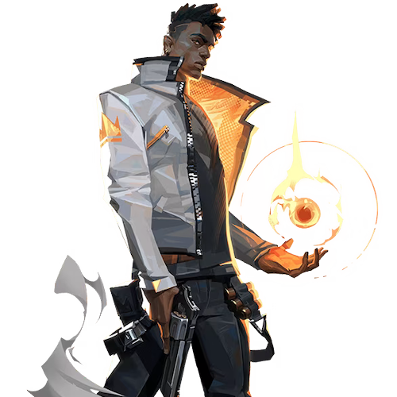

Phoenix

国籍: イギリス
ロール: デュエリスト
Phoenixは火を操るアビリティを持ち、攻撃と回復の両方をこなせるバランスの取れたエージェントです。彼のスキルは敵を燃やしつつ、自身の体力を回復させることができます。
公式トレーラー
スキル
| スキル名 | 値段 | 所持上限 | 説明 |
|---|---|---|---|
| ブレイズ (C) | 200 | 1個 | 火の壁を生成し、通過した敵にダメージを与え、自分には回復効果をもたらします。壁は曲げて配置することも可能です。 |
| カーブボール (Q) | 200 | 2個 | 敵の視界を遮る火の玉を投げます。火の玉は曲げることができ、壁に当たると爆発してフラッシュ効果を与えます。 |
| ホットハンズ (E) | 無料 | 1個 | 火の玉を投げて、着地した地点を燃やし、敵にダメージを与え、自分には回復効果をもたらします。 |
| ランイットバック (X) - アルティメット | - | 1回 | 使用すると、一定時間内に倒されても元の位置に戻って復活します。この間に得たダメージはリセットされます。 |
立ち回りとおすすめマップ
攻めの立ち回り
Phoenixは自身のスキルで敵を攻撃しつつ、自分を回復できるため、前線での戦闘が得意です。ブレイズやカーブボールを使って敵の視界を遮りつつ、ホットハンズでダメージを与えます。
守りの立ち回り
守りでは、ブレイズで敵の進行を遅らせたり、カーブボールで敵をフラッシュさせることで有利な状況を作り出します。ランイットバックを使えば、リスクを負わずに強気にピークすることが可能です。
ブレイズの使用タイミング
攻撃時にはブレイズを使って敵の視界を遮りつつ、自分を回復することができます。守り時には敵の進行を遅らせるために使います。
カーブボールの効果的な使い方
カーブボールは曲げて投げることができるため、壁越しに敵をフラッシュさせるのに非常に効果的です。これを利用して敵を驚かせ、簡単にキルを取ることができます。
ランイットバックの活用法
ランイットバックを使用するときは、敵の位置を把握してから攻め込むと効果的です。リスクを負わずに敵を攻撃し、元の位置に戻って再度戦闘を続けることができます。